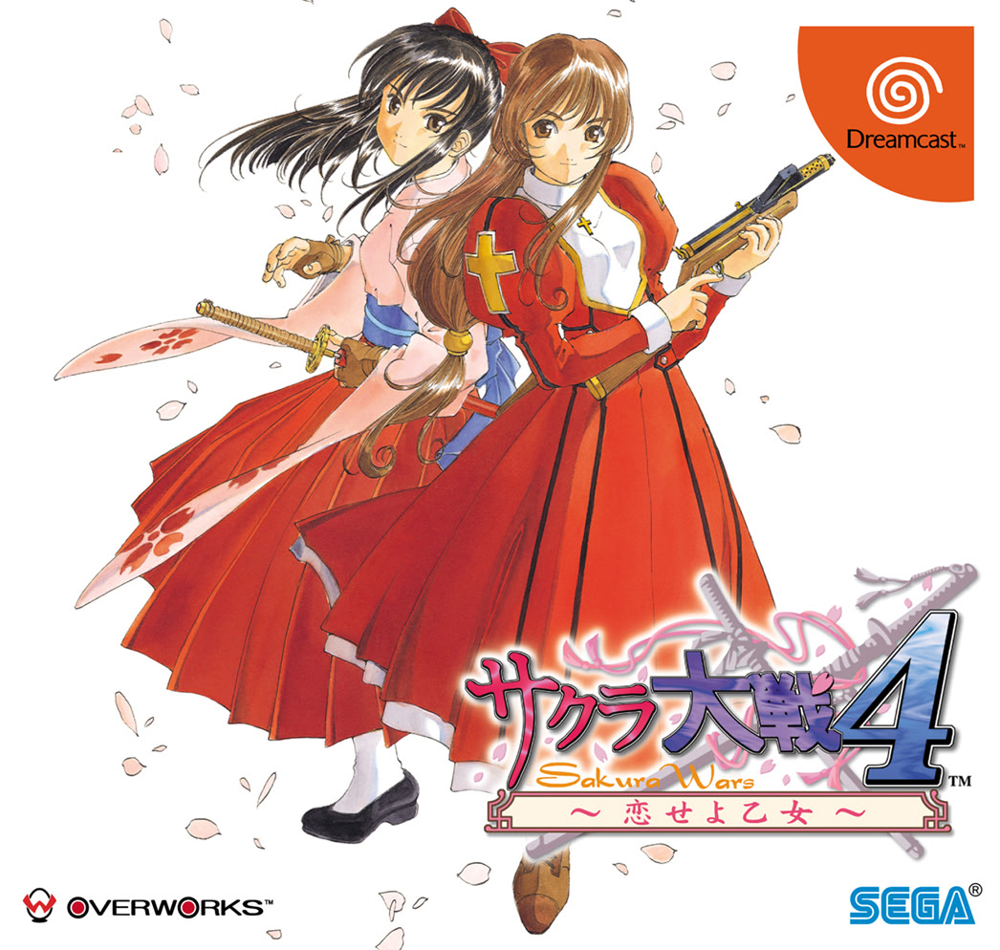
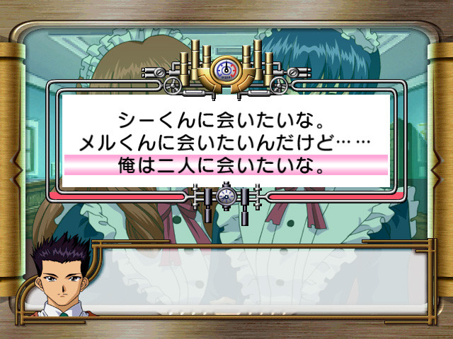
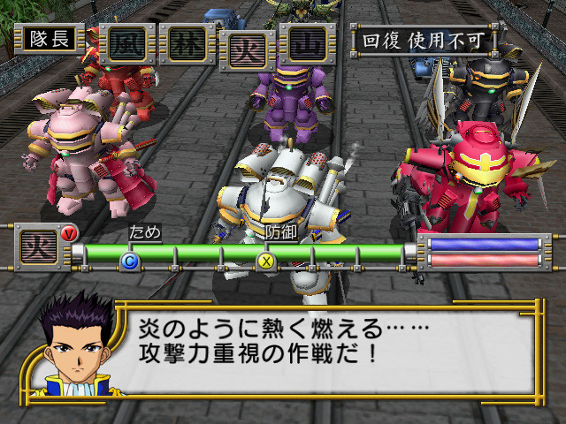

サクラ大戦4 〜恋せよ乙女〜
Complete Dreamcast walkthrough and completion guide for the 1927 finale uniting 帝国華撃団 and 巴里華撃団 under 大神一郎. Plan ビジュアルメモリ save transfers from the first three Dreamcast entries, navigate every timed free-roam slot, manage trust across 13 heroines in a compact campaign, and unlock all 14 endings.
| Japanese Title | サクラ大戦4 〜恋せよ乙女〜 |
|---|---|
| Release & Platform | March 21, 2002 on Sega Dreamcast, Japan only, later ported to Windows PC in 2005 |
| Media & SKUs | 1 Game GD-ROM, Standard HDR-0191, Limited Edition HDR-0202 with bonus drama disc, Complete Box HDR-0201 |
| VMU Save Blocks | System file SAKURA_4.SYS uses 3 blocks, each save slot SAKURA_4.001 uses 6 blocks |
| Campaign Structure | 3 Main Acts plus 最終幕, 13 Heroine Endings plus 1 大神 Solo Ending |
| Peripherals | Dreamcast Analog Controller, ぷるぷるぱっく support, ビジュアルメモリ data merge |
Loading データ合体 from Dreamcast サクラ大戦, サクラ大戦2, and サクラ大戦3 system saves adds flashback 思い出絵 illustrations and character-specific reunion lines. Players starting without prior saves can still pick any Tokyo or Paris heroine during 第一幕 in 支配人室, or decline to pick and start with 真宮寺さくら and エリカ・フォンティーヌ.

Section Hub & Completion Trackers
Beginner Tips
VMU save merge setup, Analog LIPS control, ARMS ring pacing, and strategic save anchors.
Play Order & Endings
Minimum-run ending sweep for all 13 heroines, solo ending, and hidden squad unlocks.
Missables
Timed 5-minute room windows, two-per-run bromides, jealousy events, and tie-breaker rules.
Main Story Walkthrough
Act-by-act timed exploration maps, LIPS trust tables, and ARMS boss tactics.
Heroines & Koubu
All 13 heroines plus Ogami, unit stats, Special Attacks, Soubu finishers, and LIPS styles.
Bromides & Omake
Shop bromides, Memory Pictures, post-clear extras, and Sakura Taisen Jan special hands.
Adventure & ARMS Visual Reference

